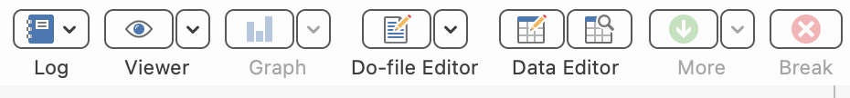
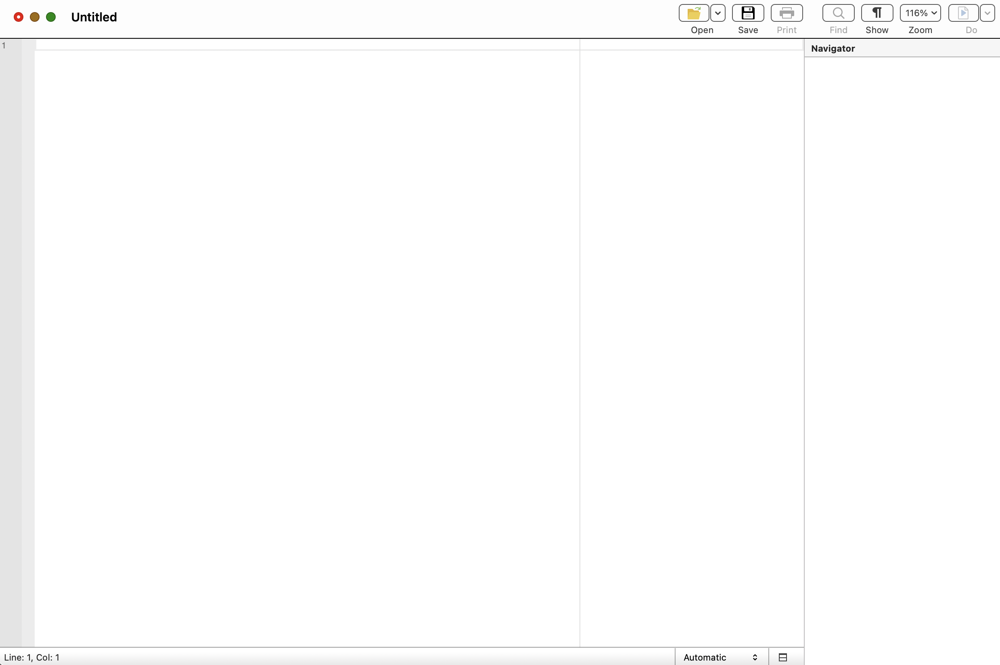
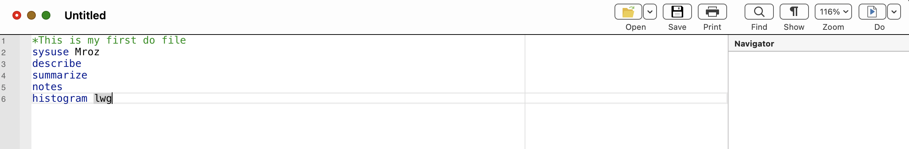
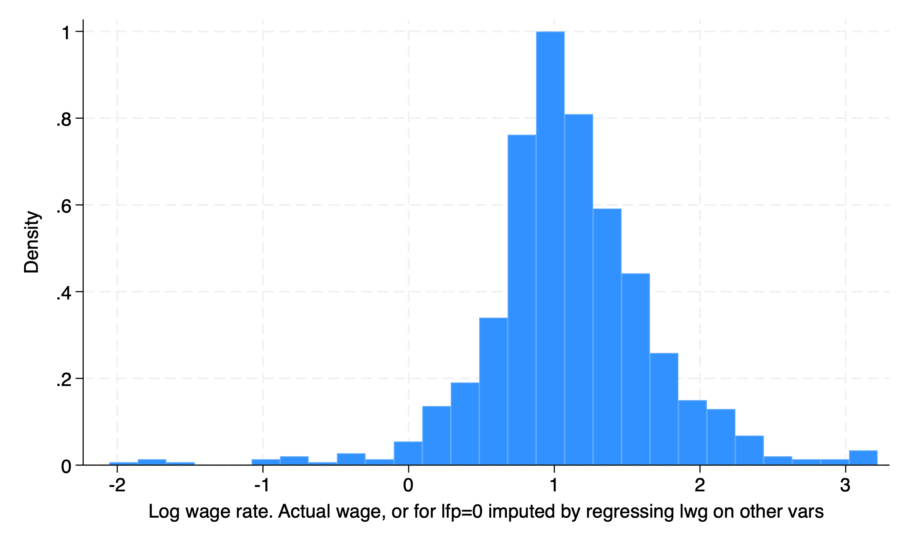
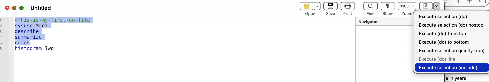
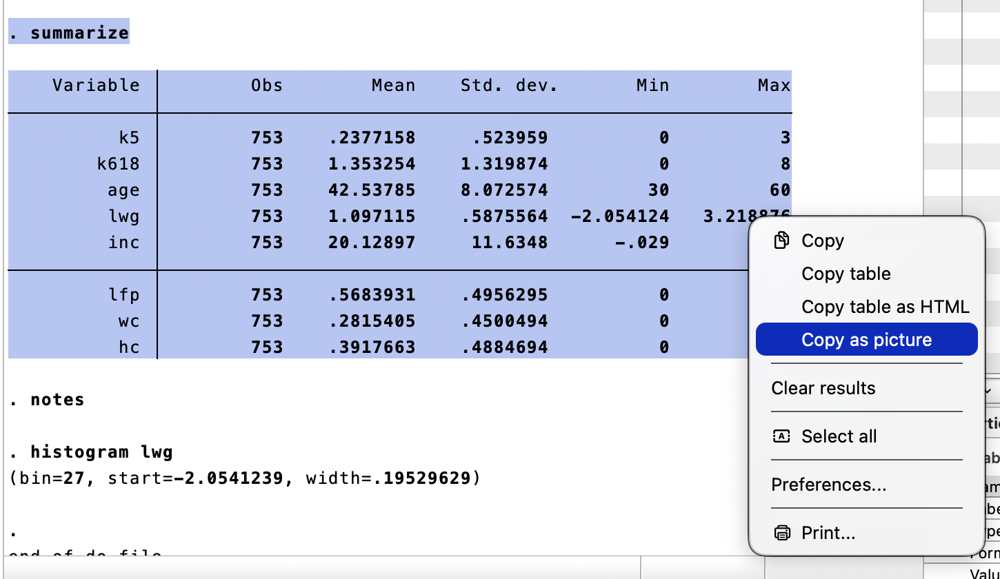
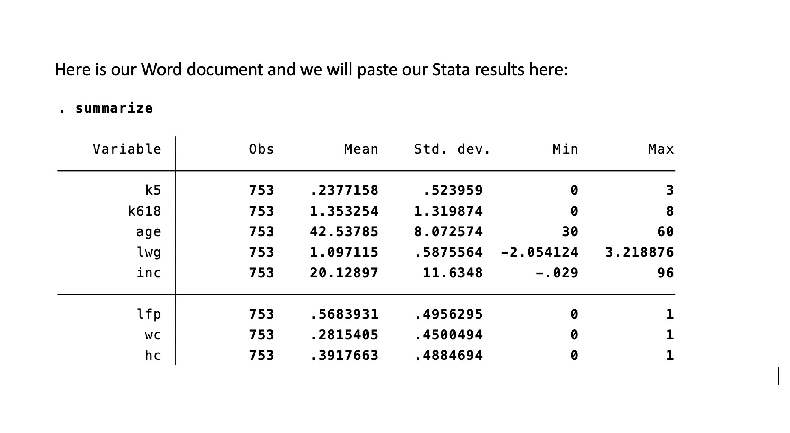

Chapter 3 Commands, Do Files, and Results
I don’t spend much time on Data Editor, since we should be doing data transformations within our reproducible syntax in our do files. This will be our focus moving forward.
Why use do files? My two main points are the following: 1. Efficiency 2. Transparency
Efficiency: Your future time required to do routine tasks drops immensely once your syntax works. Not only can it reduce time for a routine task, you can take snippets of your syntax for other do files. No point in reinventing the wheel! Point and click may be faster up front, but on routine tasks point-and-clicks get left in the dust compared to syntax.
Transparency: You can provide evidence of your work. An independent person can take the source data independently, and apply your syntax to see if they get similar results. Not only that, they can check for any shenanigans within the syntax. You will see data replication packages in journals of the American Economic Association.
3.1 Commands
Before we start working with do files, we should have a base repository of commands, so we can work with data. We will cover other commands, such as ttest, anova, and regress a bit later.
| Variables | Description |
|---|---|
| use | Put a Stata .dta file into Stata’s memory |
| sysuse | Put a shipped or build-in data file into Stata’s memory |
| import | Put a non-Stata file, such as .xslx, into Stata’s memory |
| cd | Change working directory |
| list | List of the values of variables |
| summarize | Summary statistics |
| describe | Describe the data in memory or in file |
| codebook | Describe the data contents |
| tabulate | Tables of frequences |
| generate | Create a variable |
| replace | Change contents of a variable |
| egen | Extensions to generate |
| graph | The graph command |
| histogram | Creates a histogram |
| save | Saves a file to designated folder |
| missing | Is missing |
These commands will be workhorses for you, so it is good to begin working with them now.
Log wage rate. Actual wage, or for lfp=0 imputed
by regressing lwg on other vars
-------------------------------------------------------------
Percentiles Smallest
1% -.6931472 -2.054124
5% .2066842 -1.822531
10% .4953217 -1.766441 Obs 753
25% .8180865 -1.543298 Sum of wgt. 753
50% 1.068403 Mean 1.097115
Largest Std. dev. .5875564
75% 1.399717 3.113515
90% 1.760261 3.155581 Variance .3452226
95% 2.083896 3.218876 Skewness -.3992074
99% 2.733368 3.218876 Kurtosis 7.040145We can dig deeper into the command by looking up the options of these command. We can look up the options for the summarize command with the following:
3.2 Qualifiers
We may want to qualifiers for conditional commands. We may want to look at subsets when analyzing data or apply a command under certain conditions. Stata’s list of qualifiers is the following:
| RelationalOperators | Description |
|---|---|
| == | is or is equal to |
| != | is not or is not equal to |
| ~= | is not or is not equal to |
| > | greater than |
| >= | greater than or equal to |
| < | less than |
| <= | less than or equal to |
| LogicalOperators | Description |
|---|---|
| & | And |
| | | Or |
| ! | Not |
We can combine the commands with qualifiers. We can combine the Not operator with the missing command to find observations where age is not missing.
Variable | Obs Mean Std. dev. Min Max
-------------+---------------------------------------------------------
lwg | 753 1.097115 .5875564 -2.054124 3.218876
Labor-force |
participation | Freq. Percent Cum.
-------------------+-----------------------------------
Not in labor force | 31 56.36 56.36
In labor force | 24 43.64 100.00
-------------------+-----------------------------------
Total | 55 100.00Our summarize command with a not missing qualifier show the natural log of wages when age is not missing.
Our tabulate command shows the labor force participation of individuals aged 55 or older.
3.3 Do-File Edtior
Let’s click the button to open a new do-file editor to write our first do file. Optionally, we can use the command line with the following:

Once we click the do-file editor button or type in doedit, a blank do file will appear.

Let’s go ahead and write our first do file.
It should look like this.

Either click the “Do” button or press Ctrl+D for Windows or Shift+Command+D for OSX. Please note that you have some options with the do drop down menu.
Contains data from /Users/Sam/Library/Application Support/Stata/ado/plus/M/Mroz.dta
Observations: 753
Variables: 8 2 May 2021 01:02
--------------------------------------------------------------------------------------------------
Variable Storage Display Value
name type format label Variable label
--------------------------------------------------------------------------------------------------
k5 byte %8.0g Number of children 5 years old or younger
k618 byte %8.0g Number of children 6 to 17 years old
age byte %8.0g Age in years
lwg float %9.0g Log wage rate. Actual wage, or for lfp=0 imputed by
regressing lwg on other vars
inc float %9.0g Family income exclusive of wife\'s income
lfp byte %18.0g lf Labor-force participation
wc byte %27.0g wcg Wife attended college
hc byte %9.0g hcg
--------------------------------------------------------------------------------------------------
Sorted by:
Variable | Obs Mean Std. dev. Min Max
-------------+---------------------------------------------------------
k5 | 753 .2377158 .523959 0 3
k618 | 753 1.353254 1.319874 0 8
age | 753 42.53785 8.072574 30 60
lwg | 753 1.097115 .5875564 -2.054124 3.218876
inc | 753 20.12897 11.6348 -.029 96
-------------+---------------------------------------------------------
lfp | 753 .5683931 .4956295 0 1
wc | 753 .2815405 .4500494 0 1
hc | 753 .3917663 .4884694 0 1
(bin=27, start=-2.0541239, width=.19529629)
3.4 Exporting Results
We’ll start off with some very simple exporting of our results. We’ll delve into better ETL tools later, but for now we will stick with the right-click copy-and-paste method.
Please note that I’m not a fan of the right-click copy-and-paste method, since it requires use input to complete. Acock (2020) provides a hint at some of Stata’s tools for exporting results. This includes:
- esttab
- etable
- putexcel
- putdocx
- putpdf
- markdown
- dyndoc
- collect
Highlight your do file for all the rows except for the histogram. Click the drop down menu for the “Do” button and select “execute selection”.

Now we have some output let’s highlight the results and right click for options. Let’s say we want to paste our table right into a Word document. We can select “Copy as picture”. If we wanted to paste the results into an Excel file, we can select “Copy as table”. If we wanted to paste right into a html file, we can select “Copy as HTML”.

Now we can go to our Word document and paste it.

We can also export out in LaTex, which we will discuss next week with the LyX word processor. Another option is Overleaf for working with LaTex.
Or, we can utilize Stata with RMarkdown as you see here. These pages are built with the Bookdown package that utilizes RMarkdown with Stata being called.
3.5 Logs
We will cover log files a bit later in Mitchel (2020). But as a preview, you will need to use log files for your homework. However, I recommend not using log files until your syntax is working well. I have had plenty of do files fail to run since a log file was not properly closed during testing.